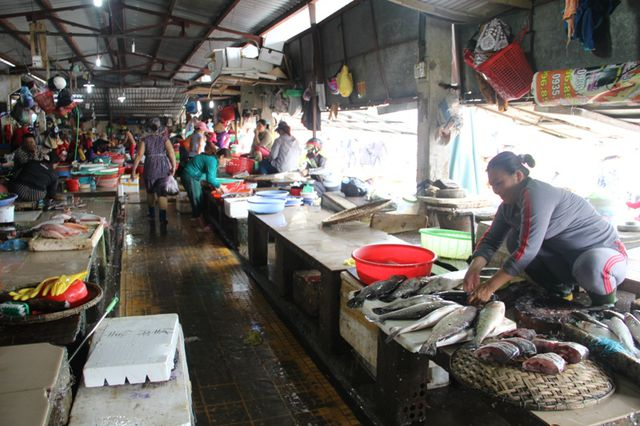
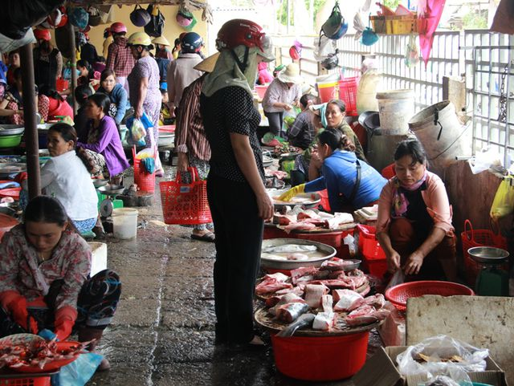
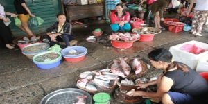
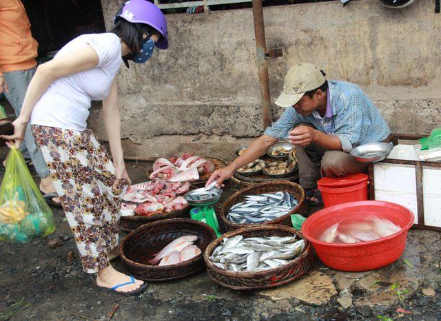
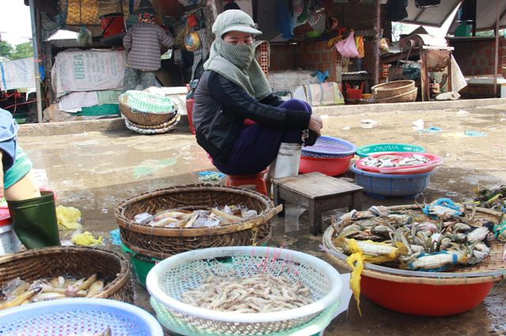
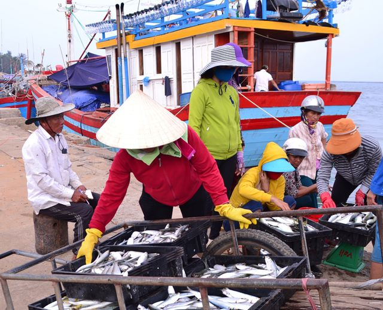
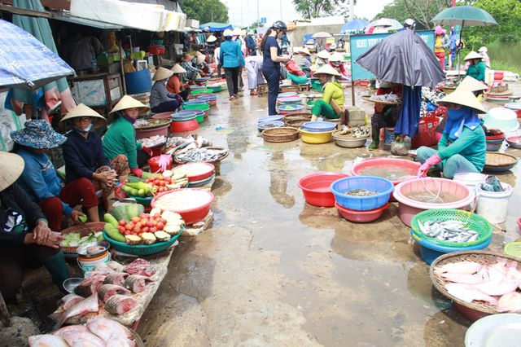
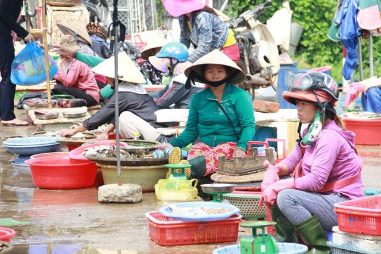
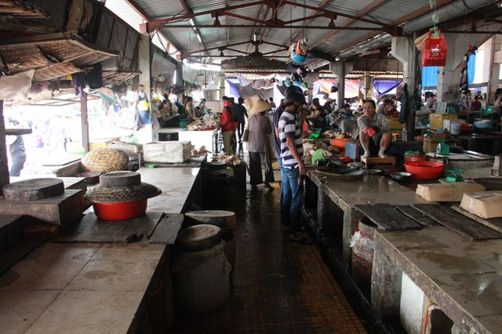

Trang chủ > Chuyên mục > Kinh tế > Hải sản > Cá tầng nổi “an toàn”, người tiêu dùng vẫn “né tránh” hải sản

Cá tầng nổi “an toàn”, người tiêu dùng vẫn “né tránh” hải sản
Dân trí Gần một tuần sau kết luận của Bộ Y tế về độ an toàn của các loại hải sản, nhiều chợ đầu mối ở Quảng Trị đã bắt đầu bày bán trở lại sản phẩm đánh bắt từ biển, song người tiêu dùng vẫn còn “né tránh”, sức mua vẫn hạn chế.
Trước đó, Bộ Y tế đã kết luận: Tất cả hải sản như cá ngừ, cá thu, cá nục các loại, cá chỉ vàng, cá bạc má, cá hố, cá bò, cá cam, cá trích, cá đối, cá cơm và các loại hải sản khác sống ở tầng nổi, hải sản tại đầm nuôi của 4 tỉnh miền Trung đều đảm bảo an toàn để sử dụng làm thực phẩm.
Nhà chức trách cũng khuyến cáo, các loại hải sản như ghẹ, tôm, tôm tít, ốc, mực, cá đuối, cá đục, bạch tuộc, cua đá và các hải sản khác sống ở tầng đáy trong vòng 13,5 hải lý chưa đảm bảo an toàn để sử dụng làm thực phẩm.
Cá tầng nổi “an toàn”, người tiêu dùng vẫn “né tránh” hải sản
Theo khảo sát của PV Dân trí, tại các chợ trung tâm như: chợ Đông Hà, chợ phường 5, chợ phường 3... một số tiểu thương đã thu mua cá biển về bày bán trở lại, song vẫn rất ít người mua. Chính vì tâm lý của người tiêu dùng còn e ngại trong việc sử dụng cá biển nên các tiểu thương cũng không dám bán nhiều mà chỉ bán xen lẫn với các loại cá nước ngọt.

Bà Nguyễn Thị Thanh Hương, bán cá tại chợ Đông Hà cho biết, khi người tiêu dùng có dấu hiệu “quay lưng” với cá biển, bà chuyển sang bán cá nước ngọt
Ghi nhận tại chợ Đông Hà, tỉnh Quảng Trị, chỉ thấy khoảng hơn chục quầy hàng có cá biển. Các mặt hàng hải sản được bán như: cá nục, cá ngừ, cá đối, cá bớp… là các hải sản sống ở tầng nổi được các tiểu thương bày bán ở chợ.
Đây là khu chợ lớn nhất, nằm ở trung tâm thành phố, nhưng sức tiêu thụ cá biển vẫn còn hạn chế. Bên cạnh đó, số lượng hải sản được bán ở mỗi quầy hiện tại vẫn không nhiều, chỉ từ 20-30kg cá các loại. Các tiểu thương vẫn dè dặt vì sợ nếu bày ra nhiều sẽ bán không hết, ế ẩm dẫn đến lỗ vốn.

Sức mua của người tiêu dùng đối với cá biển vẫn hạn chế
Chị Nguyễn Thị An (xã Gio Việt, huyện Gio Linh) từng có nhiều năm buôn bán hải sản ở chợ) cho hay, từ khi xảy ra sự cố môi trường biển, chị ngưng hẳn việc buôn bán hải sản biển mà chuyển đổi qua các loại cá nước ngọt như: cá mè, cá lóc, lươn…
Mới đây, khi nghe được thông tin hải sản tầng nổi ăn được, chị trở lại bán thêm cá nục, mực đánh bắt xa bờ, cá ngừ. Chị An cho biết: “Tôi kinh doanh thủy hải sản ở chợ Đông Hà đã lâu, nhưng từ khi xảy ra sự cố môi trường biển tôi chuyển sang bán các loại cá sông, cá hố... Khi Bộ Y tế công bố hải sản tầng mặt ăn được, tôi đã bán lại cá biển. Trước khi xảy ra sự cố mỗi ngày tui bán được 50kg hải sản, nhưng giờ chỉ bán được gần 20kg. Có người đã ăn hải sản nhưng có người vẫn còn lo sợ, né tránh. Mong các cơ quan thẩm quyền có biện pháp tuyên truyền loại cá nào ăn được để người dân yên tâm sử dụng để việc buôn bán trở lại bình thường”.

Dù các chợ đã bán hải sản biển trở lại nhưng người tiêu dùng vẫn dè dặt

Chỉ số ít người dân chọn mua cá biển sau khi có kết luận của Bộ Y tế
Bà Lê Thị Thỉ (khu phố Tây Trì, phường 1, TP Đông Hà) người có nhiều năm bán cá ở chợ Đông Hà cho biết, mấy ngày qua mỗi ngày bà bày bán khoảng 20 kg cá biển nhưng không hết phải mang về. Còn những tháng trước đó, do không có ai mua nên buộc phải nghỉ bán. “Dù đã có kết luận các loại cá sinh sống ở tầng nổi an toàn nhưng vẫn ít người mua. Hầu như người dân vẫn cảm thấy lo ngại và chưa thực sự an tâm khi sử dụng cá biển”, bà Thỉ nói.

Các tiểu thương chuyển qua bán các loại cá nước ngọt, cua nước lợ
Tại cảng cá Cửa Tùng, hiện đã có nhiều thuyền gần bờ câu cá nục cập bến sau chuyến ra khơi. Tuy nhiên, khảo sát tại khu chợ gần cảng thì hải sản biển vẫn ế ẩm.

Các loại cá tầng nổi bắt đầu được đánh bắt nhiều
Chị Trần Thị Trang, người tiêu dùng cho hay, đã nhiều tháng nay gia đình chị không sử dụng hải sản biển mà chỉ mua các loại cá nước ngọt về chế biến làm thực phẩm. “Dù cơ quan chức năng công bố các loại cá tầng nổi an toàn nhưng vẫn khuyến cáo không sử dụng một số loại hải sản tầng đáy do vẫn chứa chất độc. Ở dưới biển thì ai dám khẳng định được cá sinh sống ở đâu, bởi nó thường di chuyển từ nơi này sang nơi khác. Chính vì vậy, dù rất muốn mua về ăn nhưng gia đình tui cố gắng nhịn, chỉ sử dụng cá nước ngọt cho an toàn”.

Chợ Đông Hà bày bán nhiều loại cá nước ngọt
Các loại cá tầng nổi bắt đầu được đánh bắt nhiều

Các tiểu thương chuyển qua bán các loại cá nước ngọt, cua nước lợ
Nhiều tháng nay, phần lớn các tiểu thương buôn bán hải sản đánh bắt từ biển tại chợ Đông Hà đã nghỉ bán, khiến khu vực bán cá trở nên vắng ngắt. Chỉ một số tiểu thương bán kết hợp với các loại cá nước ngọt, nước lợ vẫn duy trì việc buôn bán. Tuy nhiên, các hộ này cho rằng việc bán hải sản cá nước ngọt không đem lại lợi nhuận bao nhiêu so với cá biển vì giá thành mua vào khá cao.

Nhiều quầy bán cá biển ngừng hoạt động mấy tháng nay
Bà Nguyễn Thị Thanh Hương, bán cá tại chợ Đông Hà cho biết, khi người tiêu dùng có dấu hiệu “quay lưng” với cá biển, bà chuyển sang bán cá nước ngọt. Đến thời điểm này, cá biển vẫn chưa bán được nhiều nên bà chưa bày bán trở lại.


Từ khoá: thuỷ hải sản , tỉnh quảng trị , hải sản sống , huyện gio linh , chợ đầu mối , môi trường biển , cá nước ngọt , thành phố đông hà , người tiêu dùng , tiểu thương buôn bán .